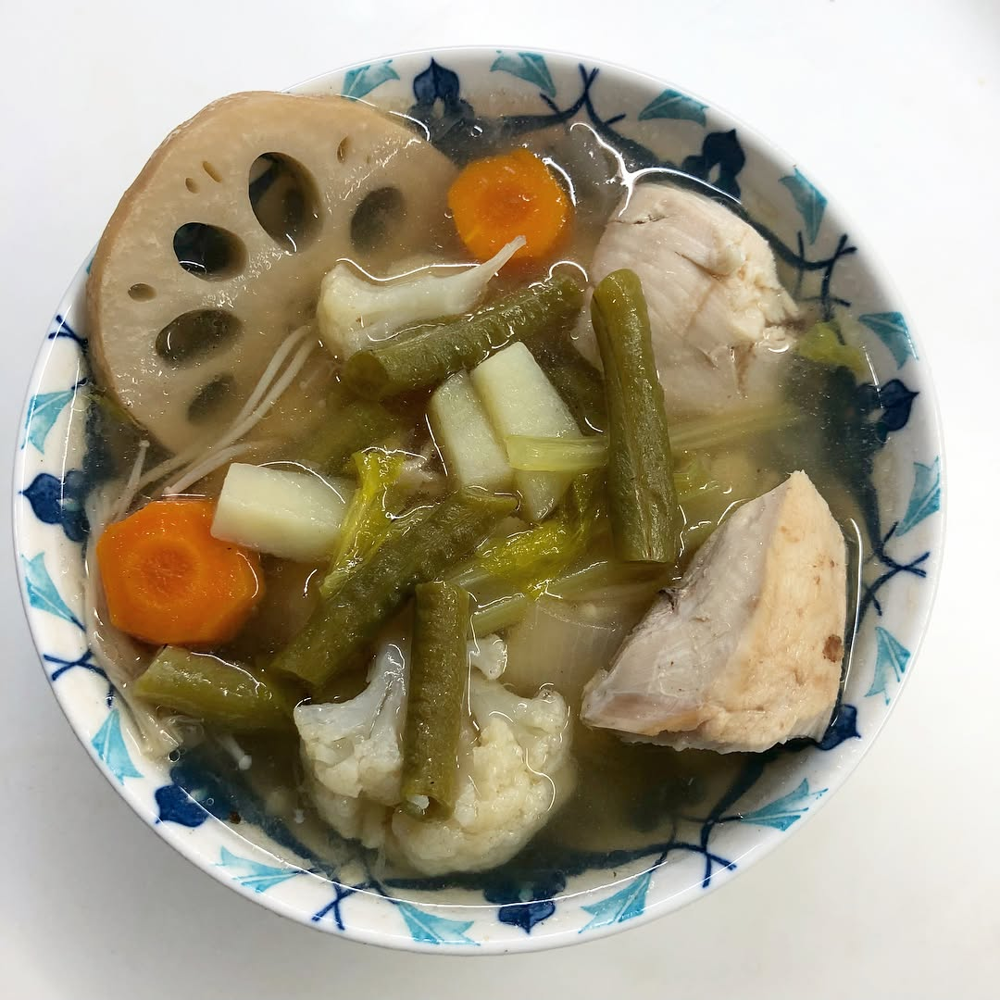

Only in front of TV you can enjoy sport and food 😁 enjoying #parisroubaix cobblestones race and hearty chicken soup with veggies and spices! 🚴🏼♂️🍲👍🏼 This race is definitely The Hell of the North - 257 km long, out of which 54.5 km are full of cobblestones. This soup is definitely delicious: make chicken broth, add 4 celery stalks, 2 🥕,4 🥔 ,lotus root, 1/2 head of cauliflower,1 big bunch of enoki and buna shimeji mushrooms,long beans, 1 onion, 2 chili, 6 star anise, 12 prunes,6 garlic cloves,2 tbsp of tamarind paste - bring to boil and simmer for 30-40 min, add 4 tbsp of 🍋 juice, salt & pepper. . . . . . Только напротив телевизора можно одновременно наслаждаться спортом и едой 😄 🚴🏼♂️🍲👍🏼 смотрим #parisroubaix - адская гонка длиной в 257 км, 54.5 из которых - это мощеная булыжниками дорога - почти как верхом на отбойном молотке 😬 а суп получился очень вкусный: приготовьте куртинный бульон, добавьте 4 🥔 , 4 стебля сельдерея, 250 г зелёных бобов,2 🥕, корень лотоса, 250-300 г грибов, 1/2 качан цветной капусты,12 черносливов, 6 звёздочек аниса, 2 чили, 1 лук, 6 зубчиков чеснока, 2 стл пасты тамаринда- доведите до кипения и готовьте на медленном огне 30-40 мин, добавьте 4 🍋 сока, соль, перец 😊 — #athleteschoice #triathlontraining #ironmantraining #swimbikerun #marathontraining #ironmantri #trailrunning #foodblogger #instafood #foodography #orbea #cervelo #specializedbikes #giantbikea #canyonbikes
2018-04-08 21:46:24
Back to main page